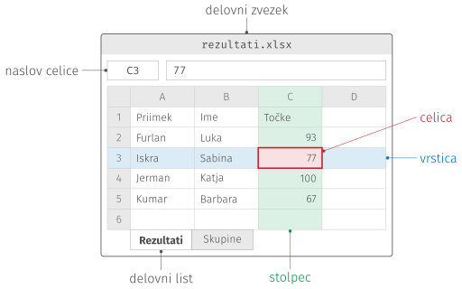
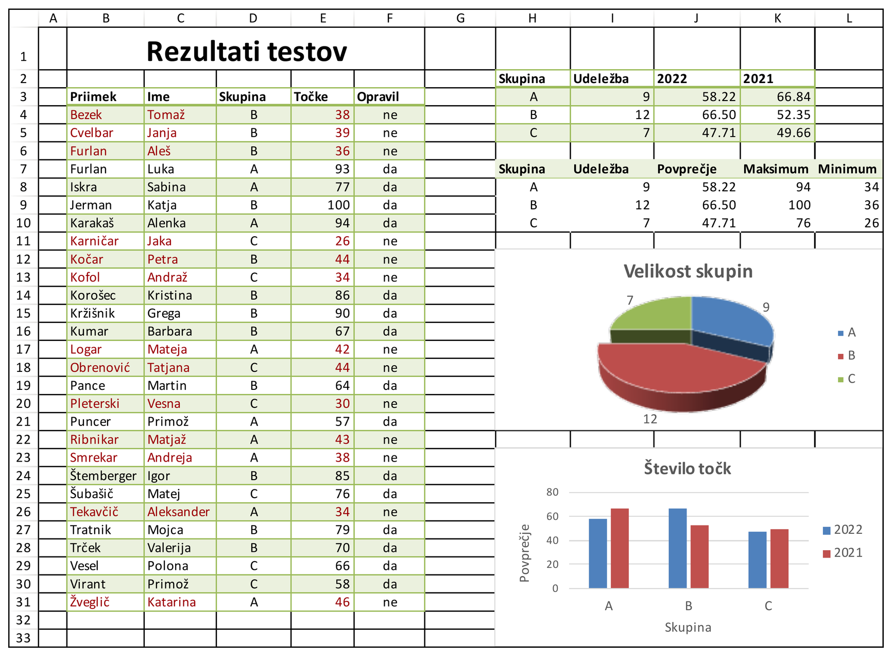
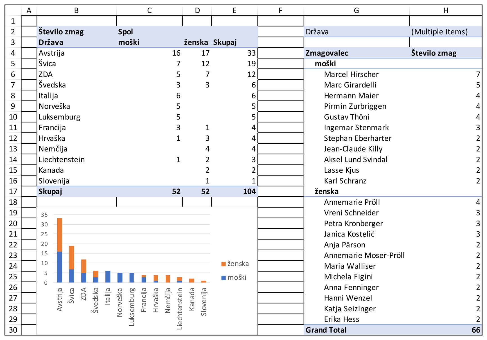
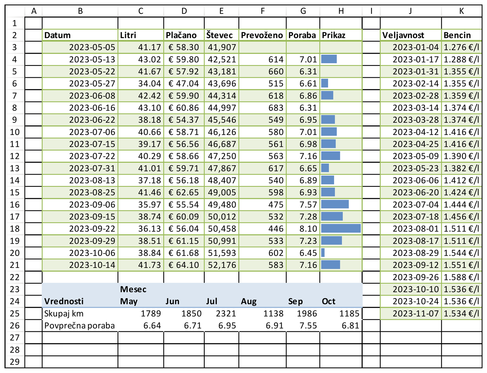
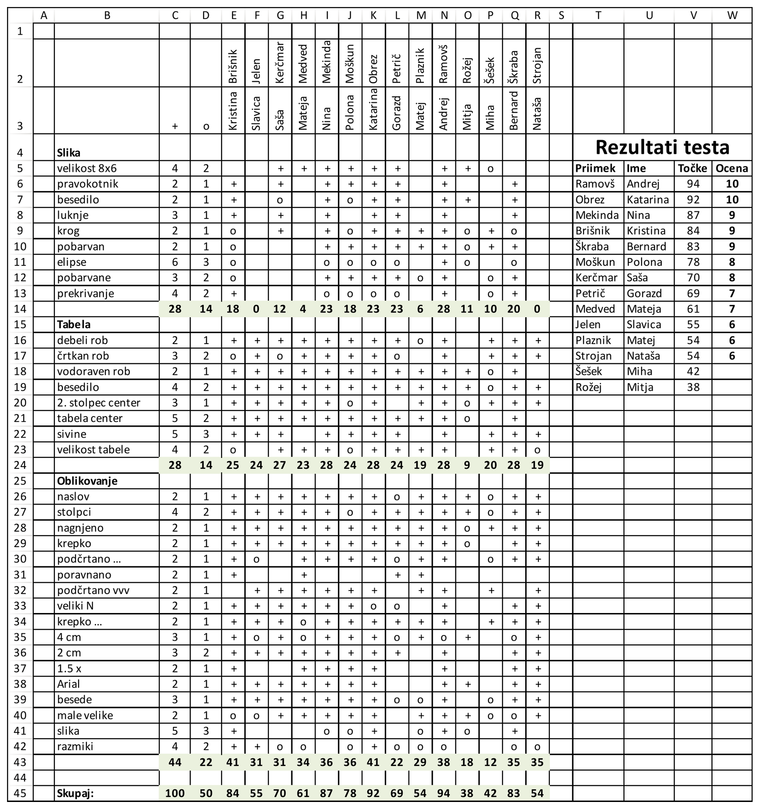

Preglednice#
Programska oprema
Excel je program za delo s preglednicami (angl. spreadsheet); podobno delujeta Numbers na macOS in Google Sheets v spletnem brskalniku. Datoteka programa Excel je delovni zvezek (angl. workbook) z enim ali več delovnimi listi (angl. worksheet). Dele preglednice kaže slika 9.

Slika 9 Deli preglednice#
Excel ste najverjetneje že kdaj uporabljali, zato predpostavljamo, da poznate strani vodiča po Excelu iz skupine Get started do vključno strani Create a chart from start to finish in stran Overview of formulas in Excel. Še posebej pomembno je, da znate opravila, ki jih na kratko povzemamo spodaj.
Vrstice, stolpci in listi.
Vrstico ali stolpec vstavite ali izbrišete tako, da desno kliknete njegovo oznako (številko vrstice ali črko stolpca) in izberete Insert ali Delete.
Širino stolpca spremenite tako, da povlečete desni rob njegove oznake; z dvoklikom na ta rob se stolpec razširi ravno toliko, da je vsa vsebina vidna.
Nov list dodate z gumbom + ob zavihkih listov na dnu okna, preimenujete ga z dvoklikom na zavihek, vrstni red listov pa spremenite tako, da zavihek povlečete.
Izbiranje in premikanje celic. Obseg celic izberete tako, da povlečete od ene vogalne celice do nasprotne, ali tako, da kliknete prvo celico, nato pa s pritisnjeno tipko Shift še zadnjo. S pritisnjeno tipko Ctrl (🍎 Cmd) izbiri dodate celice, ki niso sosednje. Klik na oznako vrstice ali stolpca izbere celo vrstico ali stolpec. Izbiro premaknete tako, da povlečete njen rob, ko se kazalec spremeni v štiri puščice. Formule, ki se sklicujejo na premaknjene celice, se pri tem popravijo same.
Diagrami. Izberite podatke skupaj z naslovi stolpcev in na zavihku Insert izberite vrsto diagrama. Ko je diagram izbran, se na traku pojavita zavihka Chart Design in Format. Naslove osi, legendo in oznake podatkov dodate na zavihku Chart Design z ukazom Add Chart Element, podatke, ki jih diagram prikazuje, pa spremenite z ukazom Select Data.
Zapolnjevanje celic.
Izbrana celica ali obseg celic ima v spodnjem desnem kotu kvadratek (angl. fill handle).
Ko ga povlečete, Excel izbiro razširi na nove celice: posamezno vrednost kopira, zaporedje, na primer 1 in 2 ali datum, pa nadaljuje.
Formula se pri tem prilagodi novemu mestu, kot opisuje razdelek Delo s podatki.
Dvoklik na kvadratek zapolni stolpec navzdol do zadnje vrstice s podatki v sosednjem stolpcu.
Sklici v formulah.
Formula se začne z znakom =.
Na celico se v njej sklicujete z njenim naslovom, na primer B3, na obseg celic pa z naslovoma zgornje leve in spodnje desne celice, ločenima z dvopičjem, na primer B2:D10.
Naslova vam ni treba tipkati: med pisanjem formule kliknite celico ali povlecite čez obseg.
Na celico na drugem listu se sklicujete z imenom lista in klicajem, na primer Podatki!B3; če ime lista vsebuje presledek, ga zapišite v enojnih narekovajih, na primer 'Rezultati 2026'!B3.
Delo s podatki#
Relativni in absolutni sklici.
V formuli lahko uporabite vrednosti iz drugih celic: =B3*C3 zmnoži vrednosti celic B3 in C3, in ko se katera od njiju spremeni, se rezultat izračuna na novo.
Tak sklic na celico je običajno relativen: Excel si ne zapomni naslova, ampak to, kje celica leži glede na formulo, na primer dve celici levo od nje.
Ko formulo kopirate, se zato sklic premakne z njo: če jo kopirate eno vrstico niže, se B3 spremeni v B4.
Znak $ pred oznako stolpca ali vrstice to oznako zaklene in sklic postane absoluten: $B$3 se pri kopiranju ne spremeni, v $B3 ostane enak stolpec, v B$3 pa vrstica.
Absolutni sklic potrebujete, kadar se vse kopije formule sklicujejo na isto celico, na primer na celico s stopnjo davka: =C3*$F$1.
Med vrstami sklica preklapljate s tipko F4 (🍎 Cmd+T).
Tabela.
Podatke zapišite tako, da vsaka vrstica ustreza eni enoti, vsak stolpec pa eni njeni lastnosti: v seznamu nakupov je vsak nakup v svoji vrstici, stolpci pa so Kraj, Cena in Količina.
Take podatke spremenite v tabelo (angl. table) tako, da izberete eno od celic in na zavihku Insert izberete Table (Ctrl+T, 🍎 Cmd+T).
Excel zdaj ve, kje se podatki začnejo in končajo, prvo vrstico pa obravnava kot glavo z imeni stolpcev.
Tabela se sama razširi, ko ji dodate vrstico ali stolpec.
Excel ji da ime, kot je Table1; smiselno ime, na primer Nakupi, ji določite na zavihku Table Design (🍎 Table), v polju Table Name.
Formule z imeni stolpcev.
V formuli se na stolpec tabele sklicujete z imenom namesto z naslovi celic: =AVERAGE(Nakupi[Cena]) izračuna povprečje stolpca Cena v tabeli Nakupi.
Znotraj tabele zapis [@Cena] pomeni vrednost stolpca Cena v isti vrstici, zato =[@Cena]*[@Količina] izračuna znesek za vsako vrstico posebej.
Takih sklicev vam ni treba tipkati: Excel jih zapiše sam, ko med pisanjem formule kliknete celico ali izberete stolpec tabele.
Formula, ki jo vpišete v eno celico stolpca, se sama razširi na ves stolpec tabele.
Funkcije s pogojem.
Funkcija IF ima tri argumente: pogoj, vrednost, ki jo vrne, če pogoj drži, in vrednost, ki jo vrne, če ne drži, na primer =IF([@Cena]>100, "drago", "poceni").
Funkciji COUNTIF in AVERAGEIF upoštevata samo celice, ki ustrezajo kriteriju: =COUNTIF(Nakupi[Kraj], "Ljubljana") prešteje nakupe v Ljubljani, =AVERAGEIF(Nakupi[Kraj], "Ljubljana", Nakupi[Cena]) pa izračuna njihovo povprečno ceno.
Argumente ločuje vejica ali podpičje, odvisno od regionalnih nastavitev računalnika; pravo ločilo vam Excel pokaže v namigu, ki se izpiše med pisanjem formule.
Iskanje z XLOOKUP.
Funkcija XLOOKUP poišče vrednost v enem stolpcu in vrne vrednost iz iste vrstice drugega stolpca.
Če imate poleg nakupov še tabelo Kraji s stolpcema Ime in Pošta, formula =XLOOKUP([@Kraj], Kraji[Ime], Kraji[Pošta]) za vsak nakup poišče vrstico z njegovim krajem in vrne vrednost iz stolpca Pošta.
Če iskane vrednosti ni, vrne napako #N/A.
S petim argumentom določite, kaj naj stori, kadar natančnega zadetka ni: z -1 vzame naslednjo manjšo vrednost, z 1 naslednjo večjo.
Četrti argument, ki pove, kaj naj vrne, če zadetka ni, lahko pri tem pustite prazen: =XLOOKUP(⟨vrednost⟩, ⟨kje iščemo⟩, ⟨kaj vrnemo⟩, , -1).
Vrtilna tabela. Vrtilna tabela (angl. PivotTable) povzame podatke iz tabele brez formul. Naredite jo tako, da izberete celico v tabeli in na zavihku Insert izberete PivotTable. Stolpce tabele, ki se tu imenujejo polja (angl. fields), razporedite v štiri območja. Območji Rows in Columns določata, po čem so podatki razdeljeni v skupine, območje Values, kaj se za vsako skupino izračuna (vsota, število, povprečje, najmanjša ali največja vrednost), območje Filters pa, kateri podatki so sploh upoštevani. Vrtilna tabela se ne posodobi sama: ko se podatki spremenijo, jo osvežite z ukazom Refresh na zavihku PivotTable Analyze.
Pogojno oblikovanje. S pogojnim oblikovanjem (Home > Conditional Formatting) videz celice določite s pravilom, na primer da so vrednosti pod 50 rdeče. Ko se vrednost spremeni, se videz spremeni z njo. Celica, ki jo pobarvate ročno, ostane pobarvana, tudi ko barva ne drži več.
Uvoz podatkov. Datoteko CSV uvozite z ukazom Data > From Text/CSV (🍎 Data > Get Data (Power Query) > Text/CSV), kjer izberete kodiranje datoteke in ločilo med podatki. Če jo samo odprete z dvoklikom, Excel oboje ugiba po regionalnih nastavitvah računalnika: šumniki se lahko pokvarijo, podatki, ločeni z vejicami, pa pristanejo v enem samem stolpcu.
V datoteki CSV so vrednosti ločene z vejico ali s podpičjem, decimalno ločilo pa je, odvisno od regionalnih nastavitev, pika ali vejica.
Kjer je decimalno ločilo vejica, kot v slovenskih nastavitvah, vrednosti ločuje podpičje, sicer bi se število 3,5 prebralo kot dve vrednosti.
Zato je pri takih nastavitvah podpičje tudi ločilo med argumenti formul.
Če decimalno ločilo v datoteki ni enako kot v nastavitvah, Excel števil ne prepozna in jih uvozi kot besedilo ali kot datume.
Ločilo med vrednostmi izberete v oknu za uvoz, decimalno ločilo pa v Excelu nastavite z File > Options > Advanced > Use system separators (🍎 Excel > Preferences > Edit > Use system settings).
Datoteke z nalogami#
Za vajo lahko doma rešujete uvodne naloge iz Excela.
Datoteke za vaje najdete v arhivu
09-preglednice.zip.
Oba arhiva pred delom odpakirajte.
Slike pri nalogah kažejo rešene delovne zvezke, kot jih Excel natisne. Na zaslonu so videti nekoliko drugače: brez črt med vsemi celicami, z gumbi za filtriranje v glavah tabel in morda z drugače zapisanimi datumi. S slikami zato primerjajte vsebino tabel, ne njihovega videza.
Večina korakov v nalogah utrjuje snov iz razdelka Delo s podatki. Nekaj korakov, označenih z Dodatno, pa samo pokaže, kaj Excel še zmore, na primer tortni diagram na sliki pri prvi nalogi. Pri teh so navodila namenoma kratka, saj je za potrebe tega predmeta dovolj, da veste, da možnost obstaja. Kako se kaj takega naredi, vprašajte jezikovni model, na primer Gemini v Googlovem iskalniku, in mu povejte, ali Excel uporabljate v sistemu Windows ali macOS. Odgovor preverite. Pri diagramu ali pogojnem oblikovanju takoj vidite, ali rezultat kaže isto kot slika. Pri formuli to ni dovolj, saj lahko tudi napačna formula vrne števila, ki so videti pravilna, zato eno vrstico izračunajte še na roke.
1. naloga: rezultati testa#
V delovnem zvezku rezultati.xlsx so rezultati testa, ki so ga študenti pisali v treh skupinah.
Podatki so v tabeli Rezultati, povzetek po skupinah pa boste sestavili v tabeli Skupine.

Slika 10 Rešena naloga z rezultati testa#
Študente uredite naraščajoče po priimkih. Namig: izberite celico v tabeli in na zavihku Data kliknite Sort; v oknu za urejanje nastavite stolpec
Priimekin vrstni red A to Z.V stolpcu
Opravils funkcijoIFsestavite formulo, ki pove, ali ima študent vsaj 50 točk (daaline). V tabeliSkupines funkcijoCOUNTIFv stolpcuUdeležbapreštejte, koliko študentov je pisalo test v vsaki skupini, s funkcijoAVERAGEIFpa v stolpcu2022izračunajte povprečno število točk skupine. Povprečje naj bo izpisano na dve decimalki, vrednost v celici pa naj ostane nezaokrožena. Namig: število izpisanih decimalk nastavite z gumboma Increase Decimal in Decrease Decimal na zavihku Home; vrednost v celici ostane enaka.Enak povzetek sestavite še z vrtilno tabelo, ki jo postavite pod tabelo
Skupine. Za vsako skupino naj prikaže udeležbo, povprečje ter največje in najmanjše število točk. Namig: poljeTočkelahko v območje Values povlečete večkrat in vsakič izberete drugo funkcijo.Sestavite stolpični diagram s povprečji točk po skupinah za leti 2021 in 2022 ter mu dodajte naslova osi in legendo. Dodatno: tortni diagram na sliki pokaže udeležbo po skupinah, največji kos je odmaknjen, ob kosih pa so oznake z udeležbo.
Točke, manjše od 50, s pogojnim oblikovanjem pobarvajte rdeče. Rdeče pobarvajte tudi priimke in imena študentov, ki testa niso opravili. Namig: izberite priimke in imena od prve vrstice podatkov navzdol, v meniju Conditional Formatting izberite New Rule in nato pravilo s formulo (🍎 slog Classic), formula pa je
$E4<50. Znak$zaklene stolpecE, zato se priimek in ime ravnata po točkah v svoji vrstici.
2. naloga: zmage v smučanju#
V datoteki smucanje.csv so zbrani podatki o skupnih zmagah v svetovnem pokalu v alpskem smučanju.
Podatki so ločeni z vejicami, datoteka pa je kodirana v UTF-8.

Slika 11 Vrtilni tabeli in diagram z zmagami v smučanju#
Podatke uvozite v nov delovni zvezek in ga shranite kot
smucanje.xlsx. List z uvoženimi podatki preimenujte vPodatki, tabelo pa vZmagovalci. Namig: v oknu za uvoz preverite, da sta izbrana kodiranje UTF-8 (File Origin) in ločilo vejica (Delimiter); uvoz podatke sam spremeni v tabelo.Na novem listu
Zmagesestavite vrtilno tabelo, ki za vsako državo pokaže število zmag moških in žensk, kot na levi strani slike. Države uredite padajoče po skupnem številu zmag. Namig: zmage prešteje polje z besedilom, na primerZmagovalec, ko ga povlečete v območje Values; poljeLetobi Excel seštel. Za urejanje desno kliknite eno od števil v stolpcu s skupnim številom zmag in izberite Sort > Sort Largest to Smallest.Vrtilni tabeli dodajte diagram, kot je na sliki. Namig: izberite celico v vrtilni tabeli in na zavihku Insert izberite naložen stolpični diagram (angl. Stacked Column).
Ob prvo postavite drugo vrtilno tabelo, ki pokaže zmagovalce iz Evrope z vsaj dvema zmagama, ločeno za moške in ženske, kot na desni strani slike. Zmagovalce uredite padajoče po številu zmag. Namigi:
Polje
Državapovlecite v območje Filters; v filtru nad tabelo vključite možnost Select Multiple Items in odstranite kljukici pri državahZDAinKanada.V območje Rows povlecite polje
Spol, pod njega pa poljeZmagovalec.Za pogoj vsaj dveh zmag kliknite puščico v glavi vrtilne tabele, izberite polje
Zmagovalecin nato Value Filters > Greater Than Or Equal To.Za urejanje v istem meniju izberite More Sort Options in padajoče urejanje po številu zmag.
3. naloga: poraba goriva#
V delovnem zvezku poraba.xlsx je zapisano, kdaj in koliko goriva smo natočili v avto in koliko je takrat kazal števec kilometrov.
Točenja so v tabeli Poraba, cene bencina pa v tabeli Cene.
Predpostavite, da rezervoar vedno napolnimo do vrha.

Slika 12 Rešena naloga s porabo goriva#
V stolpcu
Prevoženoizračunajte, koliko kilometrov smo prevozili od prejšnjega točenja: od stanja števca odštejte stanje v prejšnji vrstici. Prva vrstica nima prejšnjega stanja, zato naj ostane prazna: če Excel formulo razširi na ves stolpec in se v prvi vrstici pokaže napaka#VALUE!, vsebino te celice izbrišite.V stolpcu
Plačanoizračunajte, koliko smo plačali za gorivo: litre pomnožite s ceno, ki je veljala na dan točenja. Ceno poiščite v tabeliCenes funkcijoXLOOKUP. Namig: cena velja od datuma v stolpcuVeljavnostdo naslednje spremembe, zato iščete zadnji datum, ki ni poznejši od datuma točenja; to določite s petim argumentom.V stolpcu
Porabaizračunajte porabo v litrih na 100 km po formuli \(100 \cdot \frac{\text{litri}}{\text{prevoženo}}\). Prva vrstica naj tudi tu ostane prazna; morebitno napako v njej izbrišite.Stolpec
Prikazže vsebuje vrednosti iz stolpcaPoraba; prikažite jih s stolpci. Izberite celice stolpcaPrikazin v meniju Conditional Formatting izberite Data Bars > More Rules. Vključite možnost Show Bar Only, pri Minimum izberite Lowest Value, pri Maximum pa Highest Value. Brez zadnjih dveh nastavitev se vsi stolpci začnejo pri nič in so skoraj enako dolgi.Dodatno: sestavite vrtilno tabelo, ki po mesecih pokaže skupno število prevoženih kilometrov in povprečno porabo, kot na dnu slike.
4. naloga: točkovanje (dodatna naloga)#
V delovnem zvezku tockovanje.xlsx je točkovanje testa, ki so ga pisali študenti.
Vsaka postavka je ocenjena s plusom ali krogcem, minusi pa niso vpisani.
Koliko točk prinese plus in koliko krogec, je za vsako postavko zapisano v stolpcih C in D.

Slika 13 Rešena naloga s točkovanjem testa#
Študente uredite po abecedi priimkov. Ker so študenti v stolpcih in ne v vrsticah, izberite obseg
E2:R42, v oknu Data > Sort pod Options izberite Sort left to right in nato urejanje po vrstici 2. Vrstni red črk s strešico je odvisen od jezikovnih nastavitev, zato se lahko razlikuje od slike.V obarvanih vrsticah 14, 24 in 43 izračunajte točke posameznega sklopa. V stolpcih
CinDseštejte, koliko točk prinesejo vsi plusi oziroma vsi krogci sklopa. Za vsakega študenta seštejte vrednosti njegovih plusov in krogcev s funkcijoSUMIF, ki deluje podobno kotAVERAGEIF. Formulo sestavite za prvega študenta in jo kopirajte k drugim; prej premislite, kateri sklici se morajo pri kopiranju premakniti in kateri ne. V vrstici 45 seštejte točke vseh treh sklopov.Pod naslov Rezultati testa prenesite priimke, imena in skupne točke študentov. Izberite priimke in imena (
E2:R3), jih kopirajte, kliknite celicoT6in izberite Paste Special z možnostma Values in Transpose; druga vrstice zamenja s stolpci. Enako prenesite točke iz vrstice 45 v stolpecTočke: možnost Values poskrbi, da se prenesejo števila in ne formule.Študente v tabeli rezultatov uredite padajoče po točkah in v stolpcu
Ocenaizračunajte oceno. Ocena je 6 za 50 do 59 točk, 7 za 60 do 69 točk in tako naprej do 10 za 90 do 100 točk; pod 50 točkami naj celica ostane prazna. Namig: desetice števila točk dobite s funkcijoTRUNC, prazno celico pa s funkcijoIF. Preverite, kaj formula vrne za 100 točk.